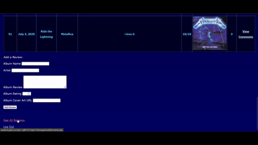

In 2023 I took on a project at the University of Central Florida that would prove to be a valuable skill, which was using both PHP and MySQL to design my first ever Content Management System.
This came in the form of an album review API where a different website layout was displayed depending on 'administrator' or 'reviewer' user permissions using session cookies.
Logging in as a reviewer allows you to manually add album reviews. Just fill out the fields for the title, artist, review and rating. You can even insert an image for the album cover and the image will directly embed on the website.
Additionally, when you are logged in as a reviewer, the table only displays the reviews you have submitted.

However, if you are logged in as an administrator, an entirely different layout is displayed. Here, you can view every single review that has been uploaded, and you can also delete reviews from the database.
Another functionality of the site is being able to add comments to reviews. You are not limited to only adding comments to your own reviews- just click "See All Reviews" for the full list and you can add a comment to any of them!
